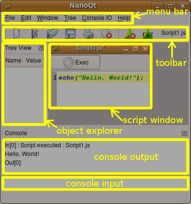

|
NanoQt documentation: home > GUI |
The NanoQt GUI is composed of the following parts:
The dockable elements can be floated out of the main window and docked back to their original place.
File menu: New Open Save javascript text files. The extension is free, it may be .js or .txt or whatever, but it is recommended to use .js so that you recognize your script files.
Edit menu: Cut/Copy/Paste standard functions: it works only with text in any window, and also with other applications.
Tree menu: insert/delete some row/columns in the explorer: development in progress.
Console IO menu: two items: (1) save: save the output console as a text file; (2) reset: empty the ouput console, reset the javascript engine, and restart the output counter.
Window menu: List all the child script windows, the plot2D, and the plot3D.
Help menu: Call this hypertext navigator help.
From left to right:
The object explorer is intended to display a browsable representation
of complex objects, like those resulting from a data acquisition. To
explore an object use the JavaScript explore() function.
See the documentation on data
management.
The upper part is a console output, very similar to a log output: each time you execute a script it will print a Out[x], where x is the absolute number of scripts executed. The console output may be saved or reseted using the console IO menu.
The lower part is a command line. You may write and execute any javascript command, native or from NanoQt library. It has an infinite historic stack: pressing the up arrow finds the previous command, and the down arrow the next one, as in a terminal.
These are the windows for editing your own scripts. They have syntax highlighting and line numbering. Each script window has an Exec button that runs the script.
It is your choice to write your JavaScript commands on the console input or on a script window. The console input is good for typing single, very short commands. For longer scripts, editing in a script window is easier.
To search for text in a script, use the menu item Edit / Find, or the keyboard shortcut Control-F. A find-and-replace window like the one shown right will pop-up. Type the search pattern in the first box and either click the Next button or just hit <Enter>. The following options are available:
Selecting the menu item Edit / Editor Settings pops-up a window for managing the editor settings. The following settings are available: